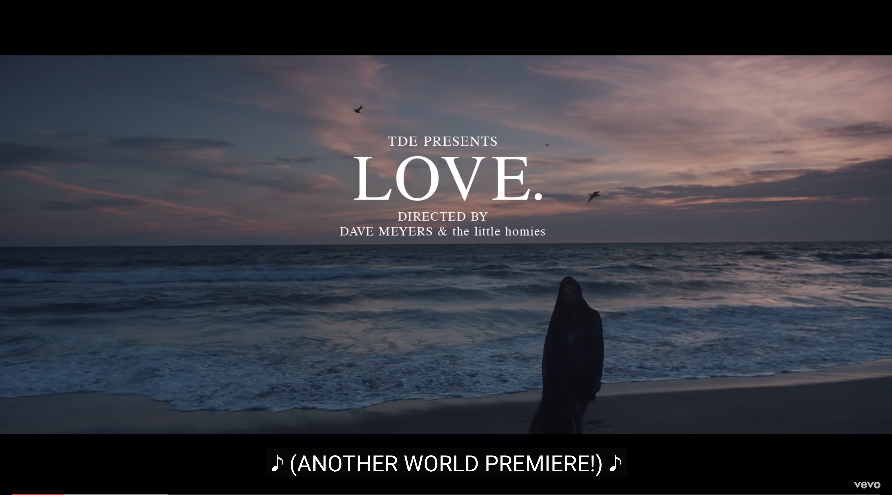

Taylor Swift - Evermore
With three albums on the top 10 best-selling of 2021 according to Billboard, Swift has raked in quite the year. Evermore sits at the top of the charts, receiving much critical acclaim after it’s quick release behind Folklore, it’s sister album. Known for her songwriting process, Swift has been in the music game for more than a decade and continues to bring out new content to fans worldwide.

Harry Styles - Fine Line
Former member of One Direction, the popular boyband, Styles has carved out an independent career for himself with Fine Line. The album also sits towards the top of the 2021 best-selling charts. Listed as a pop-rock album, the record covers multiple themes, including love happiness, and more. Rolling Stone also recently ranked this album as one of the 500 best of all time.
Kendrick Lamar - DAMN.
Lamar’s fourth studio album, Damn, was released in 2017, and won the Pulitzer Prize for Music and also a Grammy for Best Rap Album. Popular songs on the album include “Humble,” “Loyalty,” and “Love.” The album also includes multiple famous producers, such as Ricci Riera, and other artist features, such as Rhianna.
The Lumineers - BRIGHTSIDE
Lumineers, the popular indie folk band, just released their newest album in January 2022. The new record runs at a length of 30 minutes, with nine new songs. The band decided to let early drafts of songs onto the album. It was produced by Simone Felice and David Baron and recorded with only two studio sessions.

Sam MacPherson – Songs for Sam
New on to the music scene, this young artist has started to grow quite the following on TikTok at 24 years old. MacPherson released his EP, Songs for Sam, in 2021. His music is slow, and lyrics detailed describing the ins and outs of his relationships. He connects well with his audience, and steadily seems to be growing his musical career.